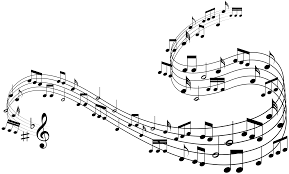

Music
By Lauren Anderson

A little bit about music
The first instruments were probably percussion instruments, obviously instruments have changed so much since then, and now we can do so much with music. Music
Artists
There are so many artists nowadays, we all have different tastes in music, but here are a few of my favorite artists. Doja Cat, Mother Mother, Taylor Swift, and of course Ed Sheeran <3. Here is a link for a youtube video with some good songs. Please keep in mind that everyone has different opinions. (Also the songs aren't clean, sorry) Thank you :)